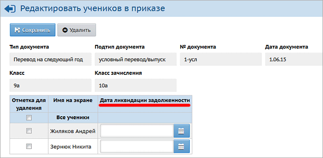

Эта возможность позволяет всей школе начать работать в системе "СГО" в следующем учебном году, не дожидаясь, пока такие отдельные ученики пересдадут те предметы, по которым они не успевали. (Согласно статье 58 Федерального закона №273 "Об образовании", пересдача академической задолженности возможна в течение всего следующего учебного года, на практике обычно пересдача происходит осенью.)
По окончании учебного года необходимо выставить в системе "СГО" итоговые отметки. В случае, если в графах "Экзамен" и "Итог" ученики имеют "двойки" по основным предметам, то для этих учеников в экране "Книга движения учащихся":
| · | Чтобы сделать условный перевод на следующий год:
|
| для типа приказа "Перевод на следующий год" нужно выбрать подтип "Условный перевод/выпуск".
|
| · | Чтобы сделать условный выпуск:
|
| для типа приказа "Выпускники" нужно выбрать подтип "Условный перевод/выпуск".
|
У каждого учащегося, включённого в такие приказы, существует поле "Дата ликвидации задолженности". Это поле не только хранит саму дату, но и является признаком - пересдал ученик академическую задолженность (если оно заполнено) или пока не пересдавал (если оно пустое).

Особенности учащихся, которые переведены на следующий год условно
Если ученик пока не пересдавал свою академическую задолженность (т.е. поле "Дата ликвидации задолженности" у него пустое), то:
| · | в новом учебном году этому ученику в системе "СГО" можно ставить отметки и посещаемость, зачислять в подгруппы по предметам и др.;
|
| · | если ученик не переведён на параллель ниже с подтипом "Несдача акад.задолженности", то в новом учебном году этому ученику можно оформлять любое движение, за исключением:
|
| а) перевода из класса в класс в пределах учебного года,
|
| б) перевода на будущий учебный год.
|
| · | вместе с тем, в закрытом учебном году есть возможность этому ученику исправить (!) итоговые отметки только в графах "Экзамен" и "Итог".
|
Внимание! В закрытом учебном году можно только исправить итоговые отметки для "условно переведённых". Если итоговые отметки не были выставлены до закрытия учебного года, - то даже если ученик участвует в приказе об условном переводе, выставить ему какие-либо отметки в закрытом учебном году уже невозможно.
Если учащийся успешно пересдал академическую задолженность
1) в предыдущем (закрытом) учебном году исправьте ученику итоговые отметки в графах "Экзамен" и "Итог", как сказано выше.
2) в предыдущем (закрытом) учебном году в разделе "Движение учащихся" найдите уже созданный приказ об условном переводе и заполните в нём поле "Дата ликвидации задолженности".
В результате ученик останется в том же классе, в который раньше был переведён условно, причём пропадёт возможность редактировать его итоговые отметки в закрытом учебном году.
Что делать, если "Дата ликвидации задолженности" была проставлена раньше? Возможность исправления отметок закрылась...
В этом случае в приказе об условном переводе нужно стереть "Дату ликвидации задолженности", затем исправить итоговые отметки, затем снова вписать "Дату ликвидации задолженности".
Если учащийся не смог успешно пересдать академическую задолженность
В этом случае нужно в новом учебном году создать приказ с типом "Перевод из класса в класс" с подтипом "Несдача акад.задолженности (второгодники)". При этом система предлагает перевести только в классы на одну параллель ниже, чем текущий класс ученика. В результате те отметки, которые были связаны с учеником с этом классе (где он начинал учёбу), остаются просто для истории; в списке класса ученик получает пометку "удалён" и зачисляется в новый класс; также пропадает возможность редактировать его итоговые отметки в закрытом учебном году.
Движение учащихся, для которых был оформлен "условный выпуск"
Ученик, для которого был оформлен приказ о выпуске с подтипом "Условный выпуск" (например, из 9 класса), впоследствии может быть зачислен в школу в ту же самую параллель, из которой был выпущен (9-й класс).
В этом случае не требуется указывать для него "дату ликвидации задолженности", система не накладывает никаких ограничений на его дальнейшее движение (как внутри школы, так и между школами).
Где можно увидеть списки учащихся, которые были переведены/выпущены условно?
См. отчёт "Списки переведённых на следующий учебный год и второгодников"